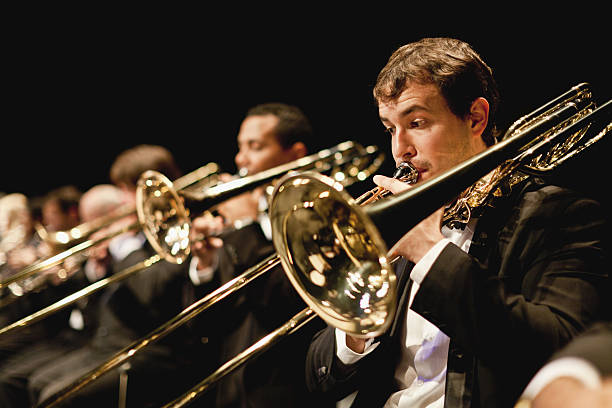

Trombone
Trombones are classified as lip-vibrated aerophones. They make sound by vibrating lips and pushing air through a mouthpiece which then travels through the instrument. The length of the instrument determines the pitch of the note. Trombonists manipulate this by pushing and pulling their slide, physically making the air travel further to achieve lower notes and vice versa.
Classical Applications
The trombone originated in religious and sacred music. Its tone resonated with a deep solemn voice that fit well with choirs. Over time, this position evolved to allow it to fit well into an orchestra ensemble as a powerful melodic brass voice. They add dramatic power to a piece.

Famous Piece
Holst's The Planets is a famous orchestra suite. Mars, the Bringer Of War is a relentless, pounding, and aggressive tune with a marching melody. The trombone segment featured here shows how expressive and powerful its voice can be when used correctly.
Fun Fact!
The trombone has often also been used for funeral music, due to its religious background. When Beethoven died, four trombonists led the procession for his funeral.